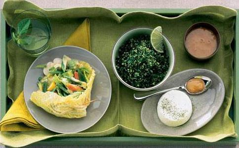

各界世界著名人物，从哲学家柏拉图和尼采，政治领袖本杰明富兰克林和甘地，到流行歌曲偶像保罗麦卡特尼和鲍勃马利都提倡
“素食主义者”的定义是避免进食所有的动物肉，包括鱼和家禽。避免吃肉，但接受如奶酪、牛奶和鸡蛋等其他的动物制品的素食者属于奶蛋素食者（英文为ovo-lacto-vegetarian，其中ovo=蛋，lacto=牛奶，奶酪等）。那些放弃所有动物製品的素食者的人数正在迅速增加，这些人被称为纯素食者或严格素食者。科学研究表明，对健康的益处随着膳食中动物来源食物量的减少而增加，因此，全素饮食整体来说是最健康的。
预防癌症由于天然含有低饱和脂肪、高纤维、及大量抗癌的植物生化素，素食有助于预防癌症。在英国和德国进行的大规模研究表明，与肉食者相比，素食者的癌症发病率约低40%。在美国，对基督复临安息日会成员的研究表明，那些避免肉食的人患癌症的风险显著减小。同样，像在中国等以植物性饮食为基本饮食的国家，乳腺癌的发病率要低很多。有趣的是，遵循西方以肉食为基础饮食的日本女性患乳腺癌的可能性是信奉更传统的以植物为基础饮食的妇女的8 倍。肉类和乳制品是多种癌症，包括结肠癌、乳腺癌、卵巢和前列腺癌的原因之一。
哈佛大学对成千上万的妇女和男子的研究表明，经常食用肉类使患结肠癌的风险增加约300%，高脂肪的饮食也促使身体产生雌激素，尤其是雌二醇。乳腺癌与雌二醇水平的升高有关。最近的一份报告指出，食用动物脂肪最多的一组绝经前妇女的乳腺癌发病率比食用动物脂肪最少的一组妇女高三分之一。（植物脂肪无此差别）。剑桥大学的另一项研究也表明高饱和脂肪的饮食与乳腺癌相关。一项研究表明乳制品与卵巢癌风险的增高有关。分解乳糖（牛奶里的糖）成为半乳糖的过程明显损害卵巢。每天吃肉使前列腺肿大的风险增加二倍，定期饮用牛奶则风险增加一倍，而不经常食用蔬菜则使风险增加近三倍。
素食者避免摄食与癌症有关的动物脂肪，并获得了丰富的纤维、维他命，和抗癌的植物生化素。此外，分析显示素食者的血液含较高水平的“天然杀手细胞”。这种白细胞专门攻击癌细胞。
战胜心脏疾病素食有助于预防心脏疾病。动物制品是饱和脂肪的主要来源并且是饮食中胆固醇的唯一来源。素食者避免了这些危险的产品。此外，纤维有助于降低胆固醇水平而动物制品不含任何纤维。当人们转换到高纤维、低脂肪的饮食，他们的血清胆固醇水平往往显着下降。研究表明，低脂肪、高纤维的素食或纯素饮食与减压、戒菸、和锻炼相结合或与审慎的药物干预相配合，实际上可以扭转动脉硬化。所谓的心脏饮食（此种饮食含瘦肉，乳製品，鸡肉）则远没有那么有效，通常只能减缓动脉粥样硬化的进程。
降血压在20世纪初，营养学家发现，不吃肉的人血压较低。他们还发现，食素可以在两个星期内显著降低一个人的血压。这些明显的效果与素食中钠的水平无关。素食者通常血压较低。没有人知道究竟为什么素食这么有效，但可能是因为减少食用肉类、乳制品和外加脂肪能够降低血液粘度，因而降低了血压。植物制品一般都含较低的脂肪和钠，而且完全没有胆固醇。蔬菜和水果中还含有丰富的钾，这有助于降低血压。
预防和逆转糖尿病透过低脂肪素食加上经常运动，非胰岛素依赖型（成年发病型）糖尿病可以得到更好的控制，有时甚至可以完全康复。低脂肪、高纤维和多複合碳水化合物的饮食可以让胰岛素更有效地发挥作用。糖尿病人可以更容易地调节血糖水平。素食虽然不能消除甲型糖尿病人（胰岛素依赖型）对胰岛素的的需要，但往往可以减少胰岛素的使用量。一些科学家认为，胰岛素依赖型糖尿病可能是由自体对乳制品蛋白的免疫反应引起的。
胆结石，肾结石和骨质疏鬆症 已经证明素食可以减少肾结石和胆结石的形成机会。高蛋白质，尤其是高动物蛋白的饮食，往往会导致人体分泌更多的钙、草酸、和尿酸。这三种物质是尿路结石的主要成分。英国研究人员建议有肾结石倾向的人应该吃素。美国
同样，高胆固醇、高脂肪的饮食，即典型的以肉为基础的饮食与胆结石的形成有关。食用肉类的妇女患胆结石的风险是吃素妇女的两倍。
出于许多同样的原因，素食者骨质疏鬆症的风险较低。由于动物制品造成钙从身体内排出，吃肉会促使骨质流失。在以蔬菜为主要饮食（没有乳製品摄入）的国家，骨质疏鬆症不如美国那么常见，虽然他们钙的摄入量低于美国人。钙很重要，但并没必要从乳制品中摄入钙。
哮喘1985 年瑞典的一项研究表明，哮喘患者吃严格纯素整整一年后对药物的需要以及哮喘发作的频率及严重程度明显下降。廿四位受试者中有廿二位报告吃素一年后有改善。
共同关注的问题有些人仍然担心素食是否可以提供所有必需的营养物质。然而，吃素是很容易做到饮食均衡的，因为这些食物提供充足的蛋白质。刻意的组合食物是没有必要的。任何普通的植物性食物都可以提供超过身体需要的足够的蛋白质。虽然素食中的蛋白质比肉食者的饮食少了几分，其实这是一个优势。过多的蛋白质已被证实与肾结石、骨质疏鬆症，甚至可能与心脏疾病和某些癌症有关。以豆类、粗粮、蔬菜为重点的饮食含有足够的蛋白质但又不会像大多数肉食者摄入的蛋白质那样“过量”。
钙很容易在素食中得到。许多深色绿叶蔬菜和豆类都含有很多钙，一些橙汁、植物“奶”和谷物是钙强化的。全谷类、豆类、水果等含有丰富的铁。
维他命B12 维他命B12 是纯素者所面临的一个问题，但也很容易解决。维他命B12主要存在于动物制品中，少量植物产品中的B12是细菌污染造成的。然而，这些植物和发酵食品，如螺旋藻、海洋蔬菜、
在怀孕期间，营养需求增加。美国饮食协会发现，纯素饮食足以满足怀孕期间的营养需要，但怀孕和哺乳期妇女应补充维他命B12和维他命D。大多数医生也建议孕妇补充铁和叶酸，虽然通常素食者所摄入的叶酸比肉食者更多。
素食妇女妊娠期产前子痫症的发病率较低，而母乳明显更纯。对素食者母乳的分析显示，在母乳中环境污染物的水平远远低于非素食者。研究还表明，在有食物过敏史的家庭，当妇女在怀孕期间禁食引起过敏的食物，包括牛奶、肉及鱼，过敏就不太可能遗传给婴儿。喝牛奶的母亲透过自己的乳汁把牛抗体传递给婴儿。这些抗体会引起疝气。
素食儿童，也有很高的营养需求，但素食足以满足这些需求。素食延长生命。对年幼的孩子来说，食素者成长更加均衡，青春期的到来时间觉不会像肉食者那样异常提前，但终生的